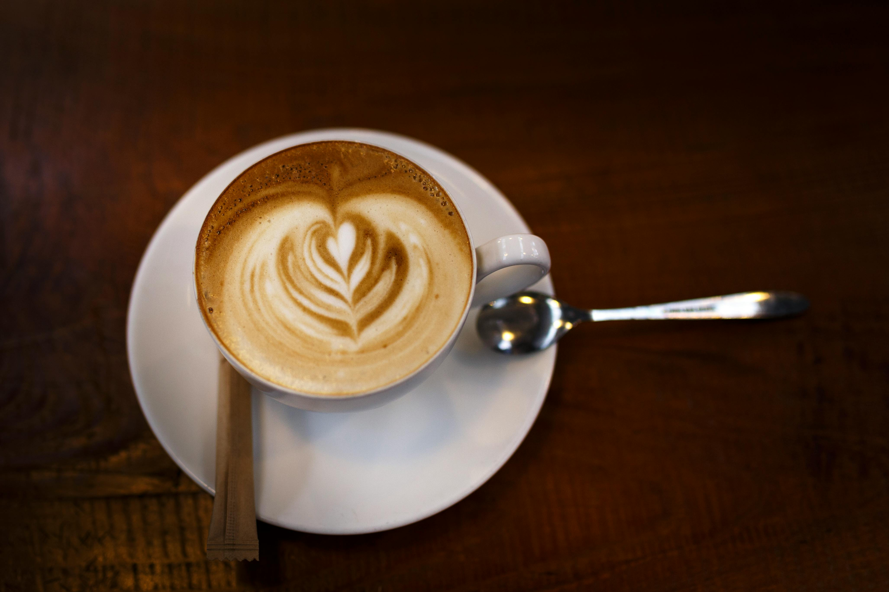

Cafe Brew...
Behind every successful person is a substantial amount of coffee..!!

I am Priya. I love to bake and experiment in the kitchen. My kitchen is
my safe haven and happy place. I bake when I am stressed, when I am
happy, when I am tensed and even when I am sad. So, I thought why not
make money out of it. That was the start of Cafe Brew.. I have always
been a huge caffeine consumer; drinking coffee after waking up, after
going to work, in the meetings, in the evenings, before going to bed and
anywhere in between. At some point, I realized that I actually couldn't
+++++ survive without my daily dose of coffee and that is where Cafe Brew's
tagline comes from.
Fun Facts
- Cafe Brew... started in 2020, as a joke
- At first, Cafe Brew... was called Cafe Bru but was quickly
changed
- Cafe Brew... started with a single person
- Initially, Cafe Brew... only had coffees to offer and nothing
else
- Cafe Brew... used to be in a small room that could hardly fit 5
members
©Copyright Cafe Brew... 2023
Designed by Tejashri